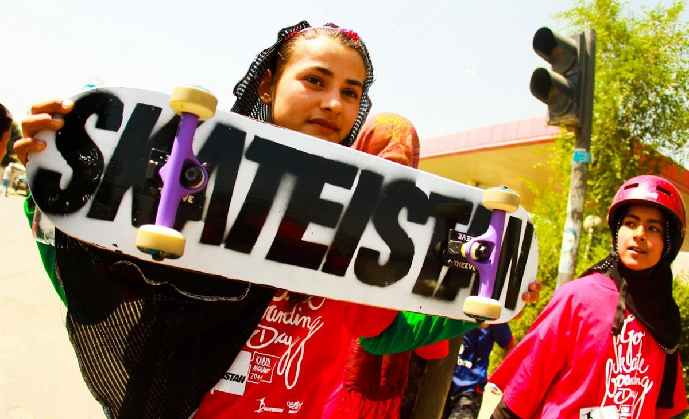
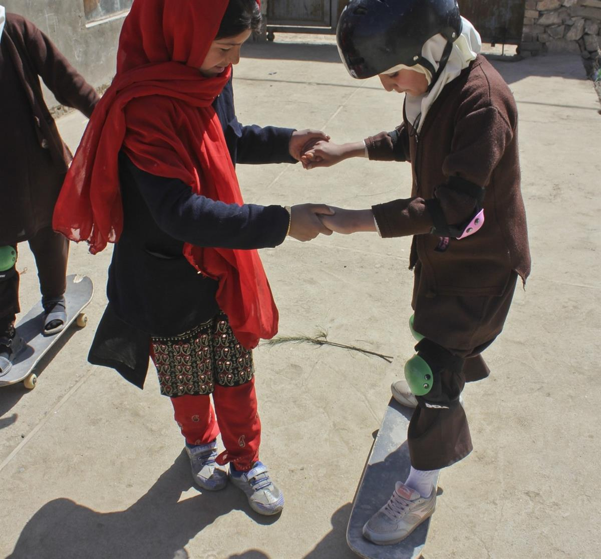
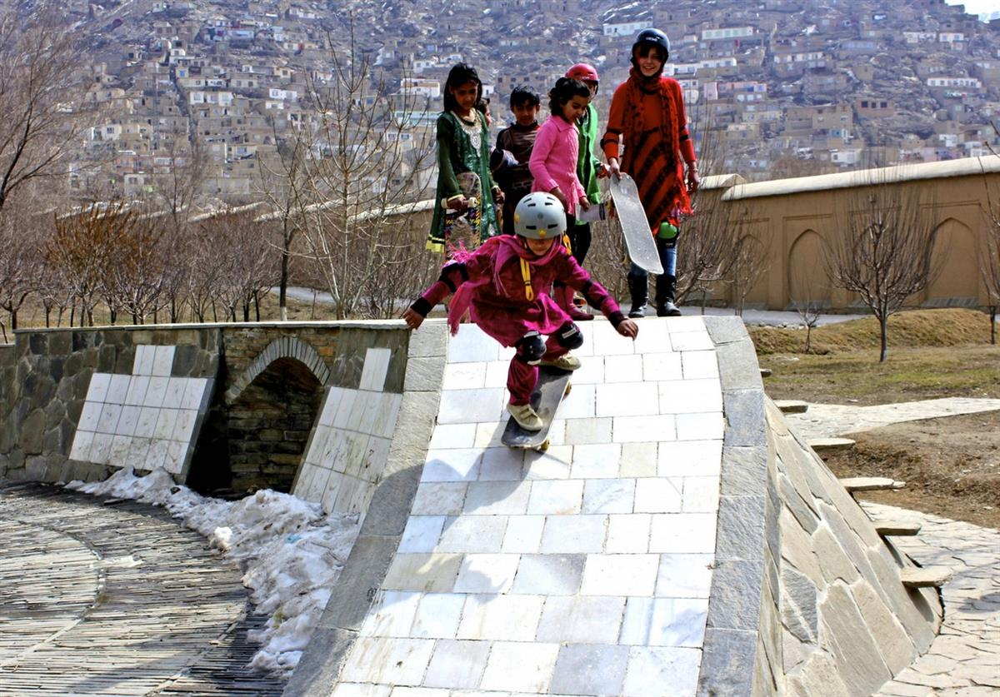
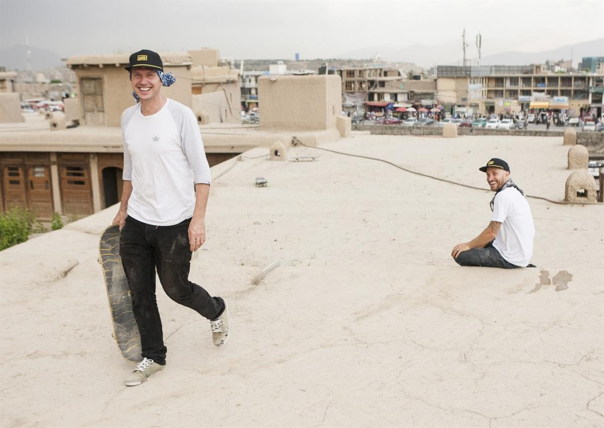

On a personal journey to Afghanistan, passionate skateboarder Oliver Percovich found himself ‘rolling’ the rugged streets of Kabul. Captivated by how children gravitated towards his board when they tried it out, the Australian saw a connection that could help create bonds beyond social barriers. Since there are cultural limits to Afghan girls playing football, riding bicycles or participating in other traditional male-dominated sports in a society that is rigidly restrictive of women’s lives, skateboarding provides a loophole that gives girls a family outside of their homes.
In 2007, Percovich founded Skateistan, a nonprofit organisation which uses skateboarding and education for youth empowerment – welcoming students of all ethnicity, gender, religion or social background to their Skate Schools in Afghanistan, Cambodia and South Africa. Today this award-winning organisation runs their programmes, Skate and Create, Back-to-School and Youth Leadership in Kabul, Mazar-e-Sharif, Phnom Penh, Sihanoukville and Johannesburg. Skateistan reaches over 1,600 youth aged 5-17 every week.
“Skateboarding is now the largest female sport in Afghanistan”, said Percovich in a 2014 TED talk in Sydney. But skateboarding itself doesn’t unlock new opportunities. “The key is the power of sharing something you love and, with persistence, it can grow into something quite unexpected and truly amazing.”
Open on original site ↗The opening of their latest school in South Africa was a big success.
Open on original site ↗AtlasAction: Skakeistan believes that children learn best when they are interested, engaged and driven by their own curiosity. Donate to help them raise $50,000 to support their skateboarding and education programs worldwide.




Skateistan's Ollie and Jamie
SOURCE: ATLAS OF THE FUTURE